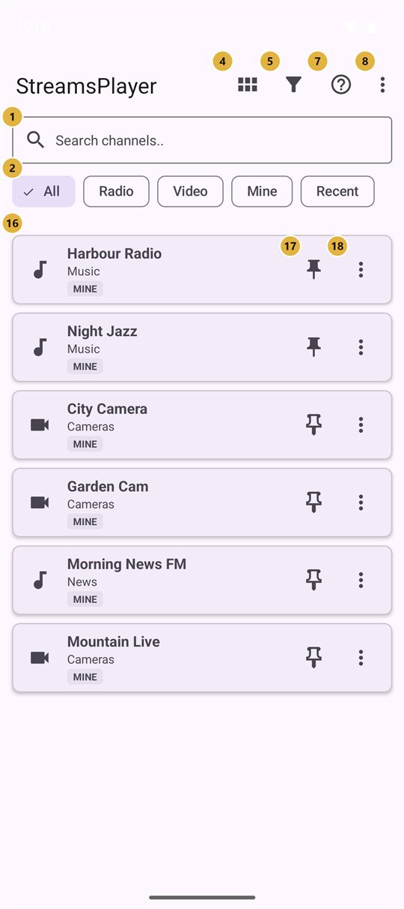
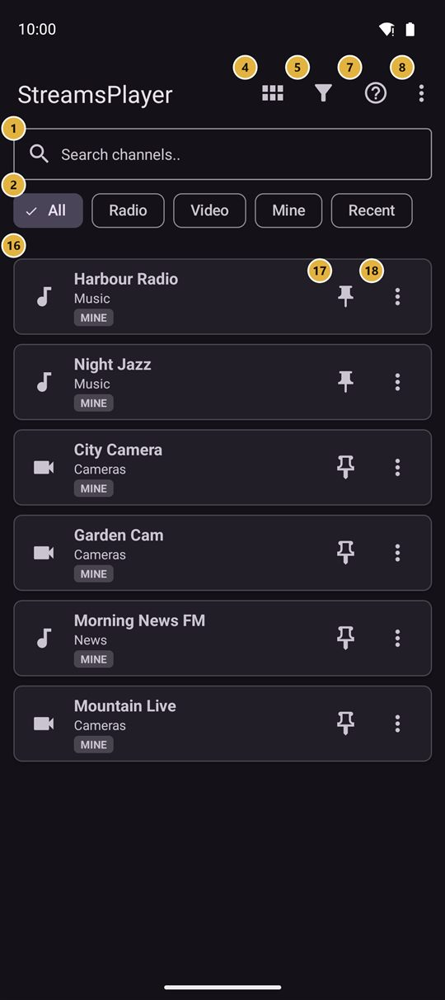

StreamsPlayer
What this is for
The main screen: your list of radio stations, video streams and cameras. Find a channel, start it with one tap, keep the ones you like at the top, and add your own.


In this order
- Find a channel: type in the search field 1 or narrow the list with the type chips 2.
- Open Filter & Sort 5 when the list is long: it narrows by collection, category, language and country.
- Tap a channel 16 to play it. Radio plays right here and the radio bar 19 appears; video opens a full screen player.
- Pin the channels you return to 17, so they stay at the top of the list.
- Add your own address with Add channel 9, or bring a whole list with Import playlist 11.
The elements
Search and filters
1Search channels..Narrows the list as you type.
Matches the channel name. The list shows only the channels that match, and the filters you have set still apply.
- Undo
- Clear the field to see the whole list again.
- Shortcut
- Ctrl + F
2All, Radio, Video, Mine, RecentAll, Radio, Video, Mine or Recent.
One tap shows only that kind: radio stations, video streams, your own channels, or the ones you played lately. All shows everything. Mine lists the live broadcasts of your other devices first, grouped by device, and then the streams you saved.
- Undo
- Choose All.
3Clear filtersAppears when a filter or a search is on.
The bar above the list names what narrows it now. This button drops the filters and the search text in one go.
- Undo
- Set the filters again in Filter & Sort.
The top bar
4Grid view / List viewSwitches the list between a grid and a list.
The icon shows the view you will get. The choice is remembered.
- Undo
- Tap it again.
5Filter & SortOpens the filter and sort sheet.
Narrow the list by collection, category, language and country, show only pinned channels, and choose the order.
6Broadcast ControlOpens Broadcast Control.
Turn this phone into a live station: audio, or the camera too. The screen is explained on its own page.
7HelpOpens this page.
Every screen has this button at the end of its top bar. It explains the screen you are looking at, without leaving the app and without a network.
- Shortcut
- F1
Menu entries
9Add channelAdds one address by hand.
Opens a short form for the address, a title, the kind of stream and a category. Edit and Delete are offered for the channels you add by hand.
10Recently playedThe channels you played lately.
Opens a list of recent channels. Tap one to play it; Clear recents empties the list.
- Undo
- Clearing cannot be undone.
11Import playlist (.m3u)Brings channels from a playlist address.
Paste the address of an .m3u or .m3u8 playlist and press Import. The channels in it join your list; the ones you already have are not duplicated.
12Import live broadcastAdds a live broadcast of someone else's device.
Paste a broadcast link or descriptor, choose a .fmsbcast or .json file, or scan the QR code that the broadcaster shows. The broadcast appears in your list as a channel.
13Refresh catalogDownloads the current channel catalog.
Brings the ready-made list of stations up to date. Your own channels and your pins are kept. After an update the app offers to download channel pictures. Under Mine the same entry refreshes the live broadcasts of your other devices instead.
14Media exchange and broadcastsOpens the guides in your browser.
A short list of topics about the media exchange and live broadcasts. Each one opens a web page, so it needs a network.
15Exchange serverOpens the exchange server screen.
Where you sign in to your own exchange server and see the broadcasts of your other devices.
23SettingsOpens the settings.
Theme, language, the broadcast settings and everything about this app.
Channels
24Update the channel list?Offers a channel list published since your last update.
When you open the list, the app checks whether a newer channel catalog is published, and this bar appears above the list only when one is; on a new phone it offers the first list. Update downloads it, exactly as Refresh catalog in the menu does. Close hides the bar, and the same list is not offered again; a list published later is. Settings > General > Updating the channel list chooses whether the app checks at all, and whether it updates by itself on Wi-Fi.
- Undo
- Refresh catalog in the menu updates the list at any time.
16Channel listYour channels, pinned ones first.
Tap a row to play it. The row shows the name, the kind of stream and whether it is playing now. Its picture is the preview for a video channel, otherwise the station's logo, otherwise its small icon, otherwise a sign for the kind of stream. In the grid, a preview or a logo fills the width of the card. After a catalog update the app offers to download the previews and the logos, each with its size; Later leaves things as they are, and the next update asks again. Under Mine, a row of a live broadcast shows its device and whether the device is online; tap it to listen or watch, and Save keeps it as a channel. A long list scrolls; the search field and the filters keep it short.
17PinKeeps a channel at the top.
A pinned channel stays above the rest, in the order you pinned it. The same button unpins it.
- Undo
- Tap the pin again.
18More actionsOpens the actions for one channel.
Play, pin or unpin, share the address, copy the address, and for channels you added yourself, edit and delete. A long press on a hardware keyboard works the same way: use the Menu key or Shift+F10.
- Shortcut
- Shift + F10
Mine
21Mine statusTells whether the list of your other devices is current.
Under Mine this line shows when the list of live broadcasts was last updated, that it is the last known list, or why it cannot be shown. The button beside it reads Retry, Set up or Sign in when that is what fits.
22RefreshAsks the exchange server for the current broadcasts.
Loads the live broadcasts of your other devices again. Your saved streams and what is playing stay as they are, and the public channel catalog is not downloaded.
The radio bar
19Radio barControls the radio that is playing.
Shows the station and has a play and pause button and a close button. Radio keeps playing when you leave the app; closing the bar stops it.
- Undo
- Tap a radio channel in the list to start it again.
20Sleep timerStops the radio after a time you choose.
Opens a sheet with ready times from 15 to 60 minutes and a custom time. While the timer runs, the button shows the minutes left. Cancel timer switches it off.
- Undo
- Open the sheet and choose Cancel timer.